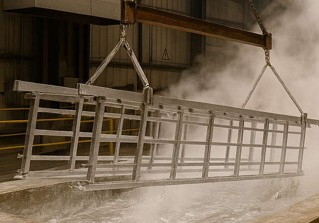
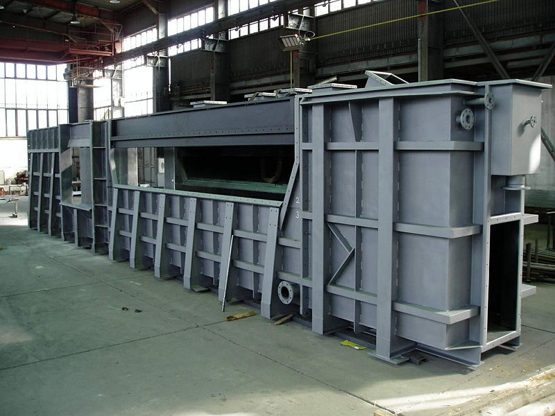

Sázava
Středně raná liniová odrůda registrovaná v roce 2015.
Profil odrůdy →Zakázková kovovýroba, laserové řezání, tváření plechů, obrábění, svařování, tryskání a žárové zinkování na jednom místě.


Závod spojuje dělení a tváření materiálu, zámečnickou výrobu, obrábění i povrchovou ochranu. Rozsah zakázky a výrobní termín potvrzuje obchodní oddělení.
Dělení plechů vláknovým laserem podle výrobních podkladů.
Více o technologii ↗ 02Ohýbání, stříhání a další zpracování plechů a válcovaných profilů.
Výrobní možnosti ↗ 03Soustružení a frézování pro kusové i navazující výrobní operace.
Obrábění ↗ 04Svařované díly a konstrukce zpracované v zámečnické dílně.
Strojírenský závod ↗ 05Protikorozní ochrana ocelových výrobků ponorem do zinkové lázně.
Žárová zinkovna ↗ 06Příprava povrchu a navazující povrchová ochrana výrobků.
Přehled služeb ↗Služby a kontakt podle oficiálního webu závodu SEMPRA Děčín ↗.
Vedle strojírenské výroby se SEMPRA PRAHA věnuje osivům, ovocným výpěstkům a okrasným rostlinám.
Profily odpovídají údajům ÚKZÚZ. Aktuální dostupnost osiva je vždy potřeba potvrdit u stanice Slapy.

Středně raná liniová odrůda registrovaná v roce 2015.
Profil odrůdy →
Odrůda udržovaná společností SEMPRA PRAHA.
Profil odrůdy →
Žlutosemenná polopozdní odrůda registrovaná v roce 2006.
Profil odrůdy →
Dvouleté odrůdy zahrnuté i v hodnocení ÚKZÚZ ze sklizně 2025.
Přehled odrůd →Adresy a identifikační údaje jsou sjednocené podle veřejných rejstříků a aktuálních oborových zdrojů.
Pod Chlumem 209, 405 02 Děčín 3
Kovovýroba a žárové zinkování.
Slapy 39, 391 76 Slapy
Řepka, len a kmín.
Rudé armády 330, 788 15 Velké Losiny
Ovocné výpěstky a drobné ovoce.
Trávnická 9, 753 01 Hranice
Hortenzie a okrasné rostliny.
SEMPRA LITOMĚŘICE s.r.o. a Sempra Vrbičany s.r.o. jsou samostatné právnické osoby. Web je nově představuje jako partnery, nikoli jako provozy SEMPRA PRAHA a. s.
| Sídlo | U topíren 860/2, Holešovice, 170 00 Praha 7 |
|---|---|
| IČO / DIČ | 45797439 / CZ45797439 |
| Telefon | +420 220 416 111 |
| info@sempra.cz | |
| Datová schránka | bc4f8zk |
Identifikační údaje ověřeny v ARES ↗.
Pro rychlé posouzení zakázky přiložte výrobní dokumentaci, uveďte materiál, počet kusů, požadované operace a termín.
Poptat výrobu →